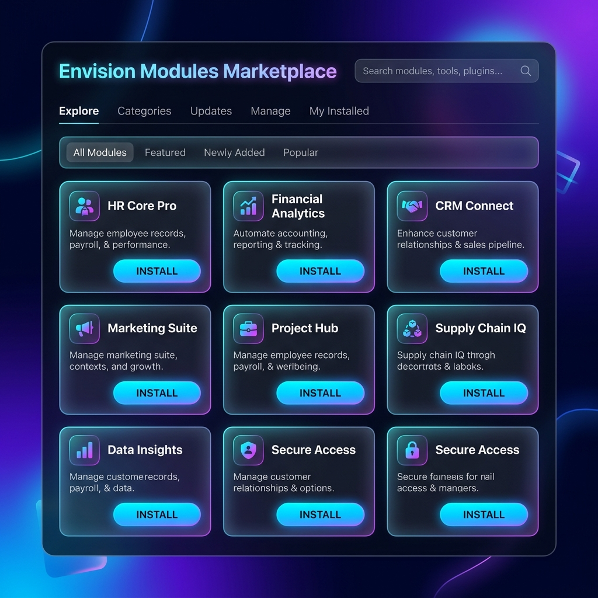

"Linux là hệ điều hành cho máy tính.
Proteus OS là hệ điều hành lõi cho mọi tổ chức."
Đập tan ốc đảo thông tin, tự động hóa toàn bộ quy trình và nhúng AI Tự hành vào mọi ngóc ngách vận hành.
Doanh nghiệp SME, cơ quan nhà nước và trường đại học đều đang chịu cùng một vấn đề hệ thống.
Dùng nhiều phần mềm rời rạc không kết nối — bẫy "rác đầu vào, rác đầu ra" và mất dữ liệu liên thông.
Nhân viên nhập liệu lặp lại, chuyển giao thủ công giữa bộ phận — lãng phí nguồn lực và chậm quyết định.
Chatbot chỉ hỏi-đáp trên file upload — không thể truy xuất "Nguồn sự thật duy nhất" để ra quyết định.
Bốn không gian kết hợp tạo vòng lặp thông minh: Con người → Quy trình → Dữ liệu → Trí tuệ.
Đăng nhập 1 lần qua Keycloak SSO, truy cập toàn bộ hệ thống. Giao tiếp Mattermost, lưu file theo P.A.R.A trên Nextcloud, tri thức với Outline Wiki.
Nhập liệu qua form Appsmith, hệ thống tự động kích hoạt n8n workflow. Poka-yoke validation chặn dữ liệu rác ngay tại giao diện nhập liệu.
PostgreSQL + Row-Level Security đảm bảo cô lập Multi-Tenant. Metabase cung cấp 3 cấp phân tích: Mô tả → Chẩn đoán → Dự báo Trend.
AI không chỉ trả lời câu hỏi — AI được nhúng sâu, giám sát 24/7, phát hiện điểm nghẽn và thực thi lệnh thay mặt Ban Giám Đốc.
AI được trao 3 cấp quyền khác nhau, đảm bảo an toàn tuyệt đối với nguyên tắc Human-in-the-loop bất biến.
Hỏi-đáp dựa trên tài liệu nội bộ (Qdrant Hybrid Search). Trả lời có trích nguồn, không hallucination.
Giám sát 24/7 dữ liệu PostgreSQL. Phát hiện điểm nghẽn và gửi cảnh báo vào Mattermost tự động.
Nhận lệnh ngôn ngữ tự nhiên → ReAct reasoning → DX-DSL → gọi n8n workflow thực thi API.

Proteus OS là lõi. Plugin là sức mạnh. Biến hệ thống thành bất kỳ phần mềm nghiệp vụ nào trong 30 giây.
Tự động khởi tạo DB schema, n8n workflow, Metabase dashboard và Appsmith UI cùng lúc.
Cài đặt thất bại ở bất kỳ bước nào, Cleanup Agent tự động dọn dẹp toàn bộ không để lại rác.
Plugin giao tiếp Decoupled qua Redis — HR phát sự kiện, Finance tự động lắng nghe và xử lý.
manifest.yaml + migrations/ scripts — nâng cấp plugin an toàn, không downtime.
Dark Mode native với Glassmorphism, AI Widget thường trực và Responsive 100% — đẹp, tập trung, trực quan.
Backdrop-filter blur, nền kính mờ đa chiều
Deep Blue / Neon Purple — không mỏi mắt
Floating chat widget luôn sẵn ở góc màn hình
Duyệt đơn, xem báo cáo trên Smartphone
Kết hợp tinh hoa Open-Source với Innovation Layer tự phát triển — không tái phát minh bánh xe.
App Shell, Launchpad, Plugin Marketplace UI, BFF API Routes
Core API, Plugin Manager, Hexagonal Architecture, Pydantic
State Management với Custom Hooks — tách Business Logic khỏi UI
RAG pipeline, ReAct Agent, DX-DSL Interpreter, AI Orchestrator
SSO, OAuth2/OIDC, RBAC 3 tầng, Tenant isolation
Chat nội bộ, Interactive Buttons cho AI Human-in-loop
Workflow automation, JSON plugin export, Webhook engine
Low-code UI Builder — UI Injection khi cài Plugin
BI Dashboard 3 cấp: Mô tả, Chẩn đoán, Dự báo Trend
RDBMS chính, Row-Level Security, Multi-Tenancy an toàn
Event Bus Pub/Sub — Plugin giao tiếp Decoupled (ADR-001)
Vector DB cho RAG — Dense + BM25 Hybrid Search (ADR-002)
Container hóa toàn bộ — 1-click setup.sh
Reverse proxy, SSL, Path-based routing đơn domain
Centralized Logging & Monitoring — observability stack
18+ endpoints, auto-generated Swagger từ Pydantic Models
8 tài liệu chuyên sâu từ BRD đến ERD, từ API spec đến AI DSL — tất cả public trên GitHub.
Tầm nhìn, chức năng FR, yêu cầu phi chức năng NFR và kiến trúc tổng quan H-P-D-I.
Đọc tài liệuHexagonal Architecture, BFF Pattern, SSO flow, ADR Redis & Qdrant Hybrid Search.
Đọc tài liệuCore tables, Multi-Tenancy RLS, bảng AI_COMMAND và chiến lược Migration an toàn.
Đọc tài liệuMulti-Tenancy RBAC 3 tầng, Keycloak sync, Metabase embedding, AI capabilities matrix.
Đọc tài liệuCấu trúc JSON chuẩn, action whitelist + Required Role, effect levels, validation rules.
Đọc tài liệu18+ endpoint Core Engine, Pydantic schemas, error responses, security definitions.
Xem SwaggerTraefik routing, mạng Docker, Observability stack Loki, chiến lược Backup & Recovery.
Đọc tài liệuColor Palette, Typography, Spacing, Component Library, Animation & Motion spec.
Đọc tài liệuTừ nền tảng tài liệu vững chắc đến hệ thống AI tự hành hoàn chỉnh — từng bước có chủ đích.
Yêu cầu: Docker Engine ≥ 24.0, Docker Compose ≥ 2.20, RAM ≥ 8GB.
git clone https://github.com/CuongKenn/ICTU_Proteus-os.git cd ICTU_Proteus-os
cp deploy/.env.example deploy/.env # Chỉnh sửa LLM API Key, # SMTP, domain settings...
cd deploy chmod +x setup.sh ./setup.sh
⚡ Sau ~2-3 phút: Launchpad: localhost:3000 · API Docs: localhost:8000/docs · Keycloak Admin: localhost:8080
Proteus OS là Open-Source, miễn phí, và được thiết kế để phát triển cùng tổ chức của bạn. Star repo để ủng hộ!